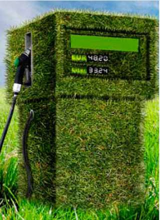
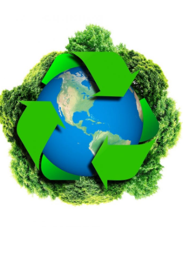

Su aprovechamiento provoca una afección muy baja al medioambiente. No se generan residuos.
Son fuentes de energía ilimitadas, por ello también se las conoce como fuentes de energía inagotables, ya que no se agotan con su consumo.

La energía solar Se trata de la energía obtenida directamente del Sol (que es, al mismo tiempo, origen de todas las energías renovables). En función del mecanismo de aprovechamiento que se utilice se podrá obtener calor o electricidad.
La energía solar fotovoltaica: se trata del aprovechamiento de la energía que procede del Sol y su transformación en energía eléctrica. La corriente eléctrica producida podrá ser directamente consumida, almacenarse en baterías o acumuladores o adaptarse para su incorporación a la red eléctrica.
La energía solar térmica: consiste en aprovechar la energía que se recibe del Sol para la obtención de calor, pudiéndose utilizar para climatizar edificios, producir agua caliente o para aplicaciones industriales.

La energía eólica Consiste en aprovechar la energía del viento, por medio de los denominados aerogeneradores o molinos. El aerogenerador es el elemento principal de este sistema de energía renovable, siendo el más común el que convierte la energía del movimiento del aire en energía eléctrica que finalmente se transmite a la red eléctrica. Típicas instalaciones eólicas son las minieólicas aisladas de la red eléctrica y las plantas eólicas o parques eólicos conectados a la red eléctrica.
Las pequeñas instalaciones minieólicas aisladas de la red eléctrica, utilizan baterías para acumular la electricidad producida para su consumo posterior, por ejemplo, en viviendas. Estas pequeñas instalaciones son de pequeña potencia y pueden complementarse con otros sistemas de renovables como la solar fotovoltaica
Se trata de las fracciones biodegradables de productos o residuos de origen biológico procedente de actividades agrarias y pesqueras, de la selvicultura, y de la fracción orgánica de residuos industriales y de los municipios. Cuando la biomasa se procesa para uso energético se convierte en biocombustibles (sólidos: astillas, madera triturada y prensada, etc.; líquidos: biodiésel, bioetanol; o gaseosos: biogás).
El contenido energético de la biomasa puede aprovecharse en diferentes procesos de transformación para obtener energía térmica o calor, o electricidad o energía mecánica (biocarburantes).

Se trata de combustibles de origen renovable que podrán utilizarse como sustitutivos o aditivos de los combustibles tradicionales como gasolinas y gasóleos. Se destacan dos tipos de biocarburantes:
Biodiésel: producido a partir de aceites y grasas de origen vegetal y animal que se transforman en carburante similar al gasóleo.
Bioetanol: alcohol de origen vegetal obtenido a partir de la fermentación de sustancias azucaradas.


Reciclar reduce la contaminación, preserva el medio ambiente y favorece la economía. Aprovecha el aislamiento social para inculcar este hábito a todos los miembros de la familia. Los especialistas de Daikin, empresa de climatización, brindan algunos consejos para infundir esta costumbre responsable en los hogares.
Dona juguetes. Si en estos días de confinamiento has limpiado a profundidad el cuarto de tus hijos y descartaron juntos varios juguetes, no los botes. Lávalos y dónalos para que tengan una segunda vida.
Dile adiós a las botellas de plástico. Diversos estudios indican que usar de manera indefinida una botella de plástico puede resultar perjudicial para la salud. Sustitúyelas por botellas de acero inoxidable.
En el caso de papel, pueden reciclarse revistas, volantes, cuadernos, bolsas de papel, agendas, etc. Los artículos deben estar limpios y secos. No se incluye servilletas ni papel higiénico.
Nunca eches el aceite por el lavatorio. Solo 1 litro contamina hasta mil litros de agua. Cuando quieras eliminarlo, espera que se enfríe y viértelo en una botella. No lo combines con ningún otro producto. Cuando esté llena, tírala a la basura o llévala a un lugar especial de reciclaje.
Guarda las pilas y baterías que ya no uses y llévalas a un punto de reciclaje especial. Estos productos son muy contaminantes para el planeta.
Reutiliza los envases de vidrio. Puedes convertirlos en floreros, centros de mesa, lámparas con luces pequeñas, porta velas o lo que se te ocurra.
Repara los electrodomésticos que fallen. De esta forma, no tendrás que comprar uno nuevo. Si la avería no tiene solución, adquiere uno con etiqueta verde. Usa de manera eficiente la energía. En la actualidad, existen hasta equipos de aire acondicionado con esta característica, que disminuye un 40% del consumo de electricidad.